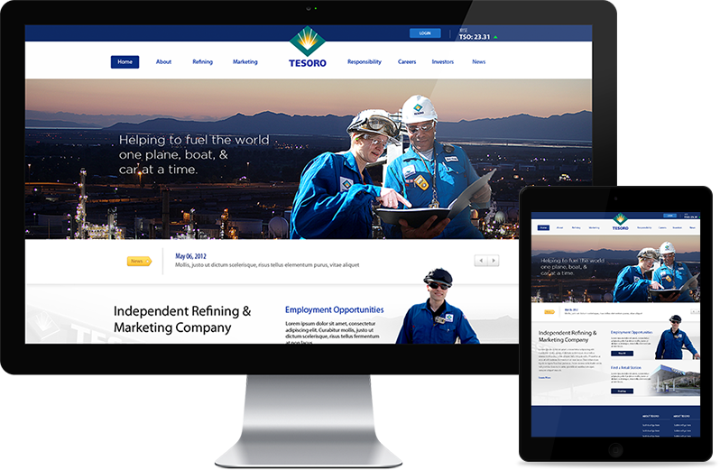

Tesoro Corporation
- Web Design ·
- Development ·
- UI/UX
Working at Zero I had the opportunity to spend two months in Beijing collaborating directly with our client Bestseller Fashion Group (China) to produce a new website and online store for ONLY, a true retail icon with over 5,000 stores across the country.
